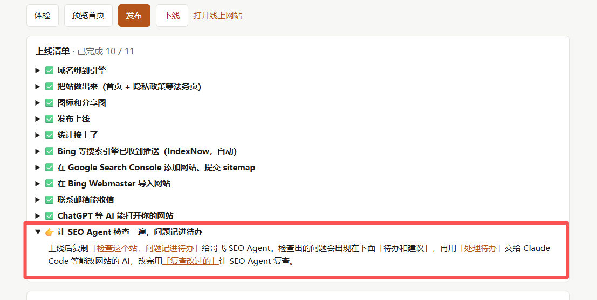
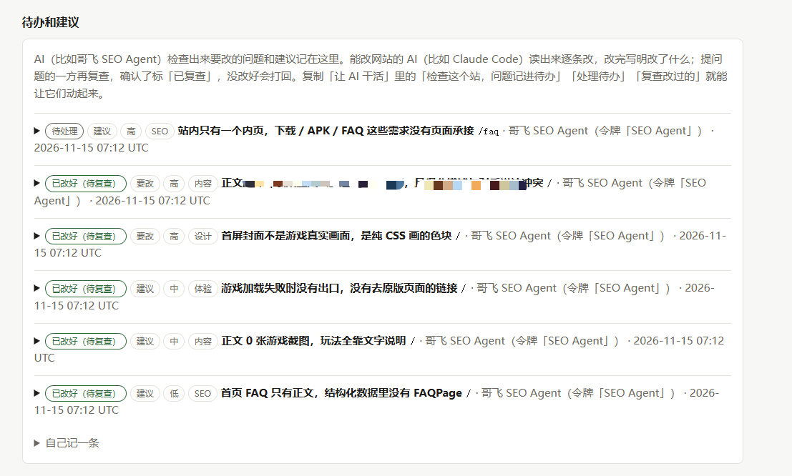
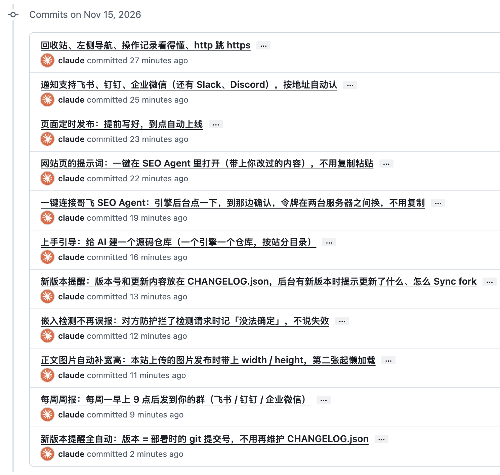
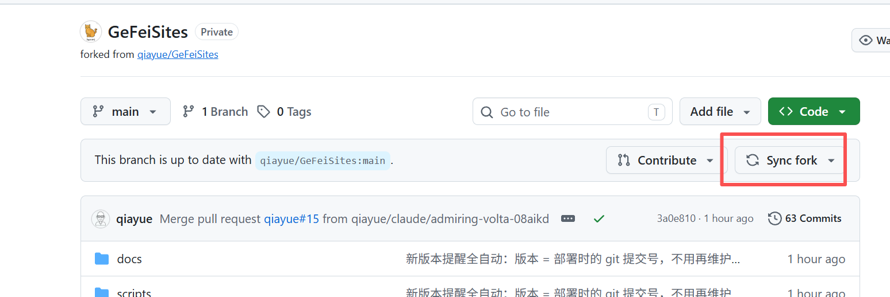
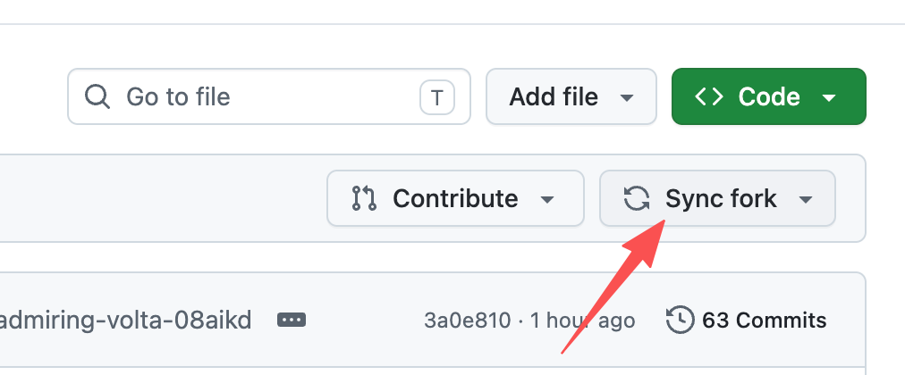
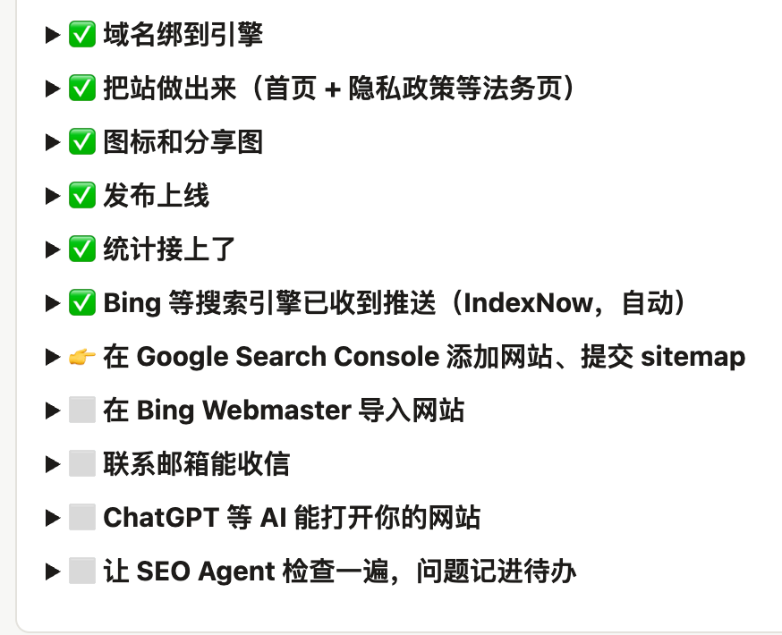

2026 年 11 月 15 日下午，群里先传开的是一张上线清单截图：11 项完成 10 项，红框圈住最后一项「让 SEO Agent 检查一遍，问题记进待办」。这是哥飞的 GeFeiSites 建站引擎新版本，小凌同学试完后说「把饭塞我嘴里了属于是」——检查、改站都交给 AI，人只负责复查。约 45 分钟后，哥飞在群里发了新版：改好了大家提到的一批问题，还贴出了 fork 用户怎么同步的按钮。
上线清单：11 项，最后一项交给 SEO Agent
清单前 10 项都是建站和提交收录的常规动作：域名绑到引擎、把站做出来（首页 + 隐私政策等法务页）、图标和分享图、发布上线、统计接上了、Bing 等搜索引擎已收到推送（IndexNow，自动）、在 Google Search Console 添加网站并提交 sitemap、在 Bing Webmaster 导入网站、联系邮箱能收信、ChatGPT 等 AI 能打开你的网站。
第 11 项是新版本接进来的：上线后复制「检查这个站，问题记进待办」给哥飞 SEO Agent，检查出来的问题会落到下面「待办和建议」；再用「处理待办」交给 Claude Code 等能改网站的 AI；改完用「复查改过的」让 SEO Agent 复查。

小凌同学贴这张图时配文「这个也太屌了卧槽」；哥飞回「赶紧试试」，他回「已经开始改了哈哈」，十几秒后又补一句「把饭塞我嘴里了属于是」。
待办和建议：AI 查、AI 改、人复查
「待办和建议」把这条流水线写得很直白：AI（比如哥飞 SEO Agent）检查出来要改的问题和建议记在这里；能改网站的 AI（比如 Claude Code）读出来逐条改，改完写明改了什么；提问的一方再复查，确认了标「已复查」，没改好会打回。复制「让 AI 干活」里的「检查这个站，问题记进待办」「处理待办」「复查改过的」，三句话就能让它们动起来。

截图里是一个游戏站当天 7:12 UTC 的检查结果：站内只有一个内页，下载 / APK / FAQ 这些需求没有页面承接；首屏封面不是游戏真实画面，是纯 CSS 画的色块；游戏加载失败时没有出口，没有去原版页面的链接；正文 0 张游戏截图，玩法全靠文字说明；首页 FAQ 只有正文，结构化数据里没有 FAQPage。五条已经改好待复查，剩一条待处理——改站的那部分，就是 Claude Code 这类 AI 干的活。
这张是打码后的版本：15:33 哥飞说「打个码，我发群里」，小凌同学一分钟后重新贴了一张，正文和站名都被涂成了色块。
新版改了什么：一屏提交记录
16:12 哥飞贴出仓库当天的提交记录：从「27 分钟前」到「2 分钟前」，一屏更新都是 claude 提交的。16:13 他说「新版发布了，改好了好多大家提到的问题」，16:17 又补一句「后台发布新版了」。

- 一键连接哥飞 SEO Agent：引擎后台点一下，到那边确认，令牌在两台服务器之间换，不用复制。
- 网站页的提示词一键在 SEO Agent 里打开（带上你改过的内容），不用复制粘贴。
- 通知支持飞书、钉钉、企业微信（还有 Slack、Discord），按地址自动识别。
- 页面定时发布：提前写好，到点自动上线。
- 上手引导：给 AI 建一个源码仓库，一个引擎一个仓库，按站分目录。
- 新版本提醒：后台提示更新了什么、怎么 Sync fork；后来又改成全自动「版本 = 部署时的 git 提交号」，不用再维护 CHANGELOG.json。
- 嵌入检测不再误报：对方防护拦了检测请求时记「没法确定」，不说失效。
- 正文图片自动补宽高，第二张起懒加载；每周一早 9 点后把周报发到你的群。
- 另有回收站、左侧导航、操作记录看得懂、http 跳 https 几项整理。
怎么同步新版：Sync fork
17:11 加油🐯🐯🐯 问「这个新版本，我要怎么同步呢？」哥飞回「你 fork 的仓库里，就有按钮」。截图里的 GeFeiSites 是从 qiaoyue/GeFeiSites fork 出来的私有仓库，主分支与上游保持一致，仓库名右侧就是 Sync fork。


对 fork 用户来说不用重建站：在自己的 fork 仓库点 Sync fork，把上游新版合并进来。截图那次合并的是 qiaoyue#15，仓库里累计 63 个提交。
群友反馈：清单一项项打勾
17:21 钟耀贴了一张走到一半的清单，配文「属于是脑子都没动，网站已经上完了」。八分钟后 Kevin 贴出 11 项全绿的那张，只回了四个字「牛逼牛逼」。

两张来自不同群友，隔着八分钟先后贴出：一张 6/11，搜索提交、邮箱、AI 可访问都还没做；一张 11/11 全绿。上线被拆成可以逐项打勾的清单，「脑子都没动」说的就是这种感觉。
这套流程能带走的
- 上线清单的最后一项从「自己检查」变成「交给 SEO Agent 检查」，问题直接记进待办，AI 改、人复查。
- 改站不再靠人转述：待办面板里写明问题和分类，Claude Code 这类 AI 读取后逐条改，改完标「已改好（待复查）」。
- 新版本通过 fork 仓库的 Sync fork 同步，不用重建站；后台会用提交号自动提示有没有新版。
原始对话
2026 年 11 月 15 日 15:28 至 17:29，5 位群友，18 条消息，按导出原样保留。